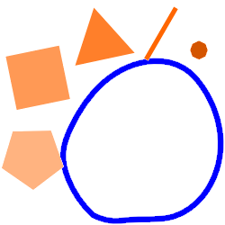
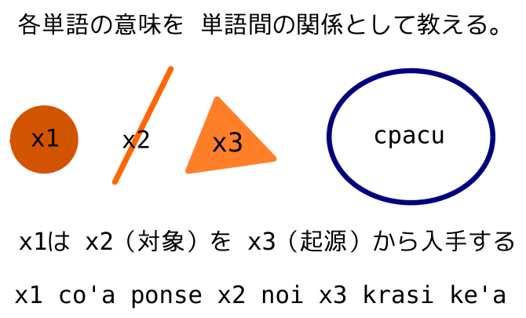
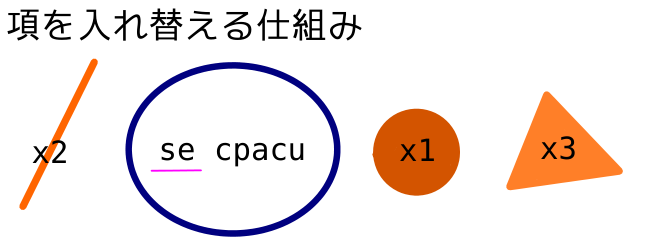
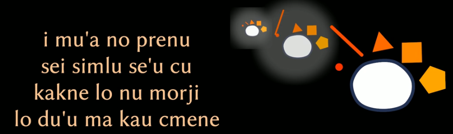
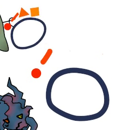
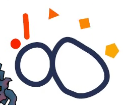

ブリプレの かげぶんしん！
ブリプレ（la bripre）とは
- la bripre
-  （Google+のアルバムから）
- guskantさんが自身の制作したロジバン動画のために生み出した、想像上の役者・演者
- bripreシリーズでは演戯したり歌つたり
- bripre jikca シリーズではホスト役としてゲストの投稿を読み上げてコメントしたり
- なんとロジバンとクワインの関係について論じた講演のスライドにも登場したらしい
- …聴講したのに全然憶えてないな…lo se tigniは"lo bridi pe zo cpacu"とあるが…
- （スライドp50）
- （p66）
- これか！！！.i'ucai これもブリプレさんの仕事だつたとは…
- ここまで体を張つた友情出演となるとguskantさんとの親密さは相当のものか（ku'i ke'u .o'iro'e 想像上の存在）
- 作品内で共に行動する事の多さもあつて、所謂「イマジナリーフレンド」を想起する程に
- 体の構造
 （紹介ページより）
（紹介ページより）- ".i la bripre cu se xadni lo se cusku no'u lu'e lo bridi .i lo blabi fa'u narju pagbu be lo xadni cu ve skicu lo selbri fa'u terbri"
- 「ブリプレは発言されたもの即ち命題を表す記号を身体として持つ。身体の白い部分は述語を、オレンジ色の部分は項を、それぞれ描写したものである。」
- ちなみにjbovlasteの{bripre}の項目では、すごい端的に「x1 は体が命題を表している人」とのみ説明してゐる
ブリプレは うごいて しゃべる
- ブリプレさんは、自身の身体が命題を表してゐるのを活かしてか、話したり歌つたりする時は発言中の文の構造を身振りで表現してくれる演者
- 今、正に発言中の部分が…
- 項のとき
- オレンジ色の部分の内、項番の対応するものだけが動く
- 動くオレンジ色の図形における頂点の数が項番号と対応：x1なら点、x2なら線、x3なら三角形、x4なら四角形、x5なら五角形の部分が動く
- ちなみにsumtcitaの場合は星型の記号を新たに排出して同様に動かす
- 述語のとき
- 心態詞や文の継目とかで
- …のがブリプレさんの基本的なわざだ、と、bripre jikca だけしかまだ観てない頃は思つてゐたが、bripreシリーズで更に別のわざを披露してゐるのを見た：謂はば「かげぶんしん」
- （"lo vliraitru"より） / （"lo no valsi"より） / （"li re te'a ny"より）
- おもてなしモードの時は披露しないのかしらzo'oru'e
- 文中のどの部分でかげぶんしんするのか
- "mulno jufra" ("complete formula") の入れ子状態（と各jufraの議論領域の独立性）を表現する際に分身する？
- 完全にそつくりの分身ではなく若干影の薄い分身なのは、"mulno jufra"の本体と"jufra selci" ("atomic formula")同士との議論領域の共有を含意しない事も部分的に表してる？
- このへんを十分に知らうとすると、これよりも遥かに大きい記事を新たに拵へる事になるので今回は見送り
- zantufaの思想的基盤を理解する事でもある
- CLLにおいても関聯の記述はある（9.7など）（あとは16.8あたりも？）
おまけ
- ぶんしんするだけぢやなかつた
- ぶんれつ
- （"li re te'a ny"より）
- selbriがtanruのとき
- しかしこの回以降は一度もお目にかからない…見た目が複雑化しすぎるからかな
notci lo du'u fukyzifpo'e lo pixra be la bripre makau kei
この記事で使用した画像は、la .guskant.により制作されたbripreのイラストやアニメーションから複製したり切り出したものですが、CC-BY-SAライセンスの下にあります。（制作者からの回答）
（アニメーションについては、動画自体に同様のライセンス情報が含まれる場合もあるので、紹介ページの動画リスト等を経由して別途確認してみませう。）
mu'o